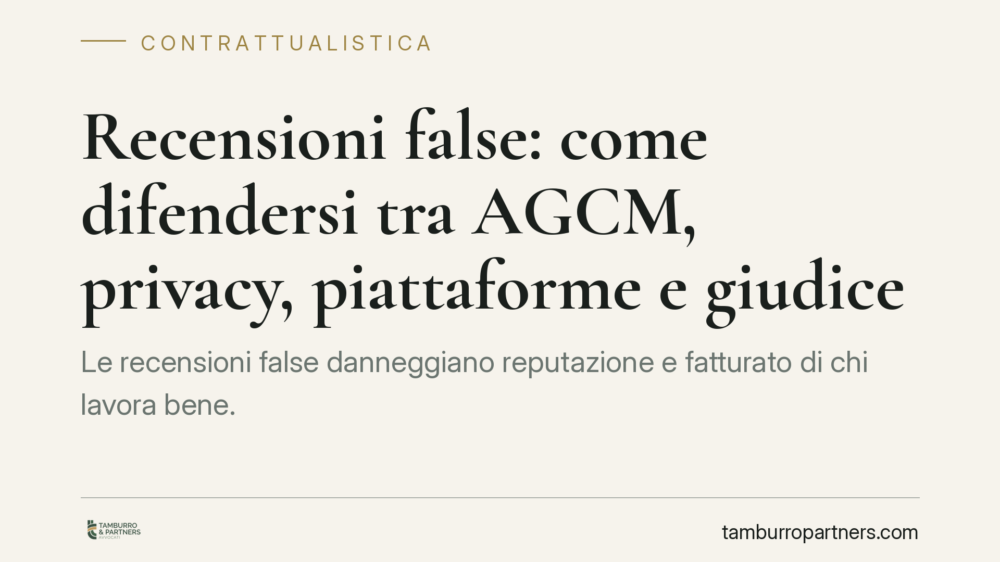

Recensioni false: come difendersi tra AGCM, privacy, piattaforme e giudice
Le recensioni false danneggiano reputazione e fatturato di chi lavora bene. L'ordinamento offre più strumenti, con effetti diversi: alcuni puntano a far rimuovere il contenuto, altri a sanzionare chi inganna, altri ancora a ottenere un risarcimento. Qui mappiamo cinque strade, con tempi, costi e nodi probatori, per scegliere la risposta più adatta al caso concreto.

Il problema in sintesi
Una recensione negativa può essere legittima: il giudizio critico, se veritiero e misurato, rientra nel diritto di critica. Diventa illecita quando è falsa, inventata o manipolata (ad esempio recensioni acquistate, profili fittizi, campagne diffamatorie coordinate).
La difficoltà pratica non è tanto giuridica quanto probatoria: dimostrare che la recensione è falsa, e non semplicemente sgradita, è il vero snodo di ogni iniziativa. Prima ancora di scegliere la strada, va costruito il materiale che regge in sede amministrativa o giudiziaria.
Inquadramento normativo
Il quadro europeo di riferimento è il Regolamento UE 2022/2065 (Digital Services Act – DSA). L'art. 16 DSA impone alle piattaforme meccanismi di *notice and action* (segnalazione e rimozione) dei contenuti illeciti; l'art. 22 DSA introduce la figura dei *trusted flagger* (segnalatori attendibili), le cui segnalazioni le piattaforme devono trattare in via prioritaria.
Sul piano nazionale, le pratiche commerciali scorrette — categoria in cui possono rientrare recensioni false diffuse o agevolate da operatori professionali — sono presidiate dall'AGCM ai sensi degli artt. 27 e ss. del D.lgs. 206/2005 (Codice del consumo), che attribuiscono all'Autorità poteri inibitori e sanzionatori.
> Nota sulle fonti recenti: alcune cronache riferiscono di una *Legge 34/2026* e di Linee guida AGCM dedicate alle recensioni online. Al momento non siamo in grado di confermarne su fonte ufficiale il titolo esatto e gli estremi. Consigliamo di verificare il testo pubblicato in Gazzetta Ufficiale prima di fondarvi una strategia difensiva: in questo contributo ci atteniamo al quadro normativo consolidato.
Sul versante penale rileva la diffamazione (art. 595 c.p.), che punisce chi, comunicando con più persone, offende l'altrui reputazione. Se l'offesa è recata con un mezzo di pubblicità — e la rete lo è — si applica la forma aggravata dell'art. 595, comma 3, c.p., con pene più severe.
Le cinque strade (e la corsia veloce)
1. Segnalazione alla piattaforma (art. 16 DSA). È la via più rapida ed economica. Si usa il modulo di notifica per ottenere la rimozione. Effetto: cancellazione del contenuto, non sanzione né risarcimento. Tempi variabili, esito non garantito.
2. Corsia veloce del trusted flagger (art. 22 DSA). Le associazioni di categoria qualificate come segnalatori attendibili godono di trattamento prioritario. Per le imprese di ristorazione e turismo, affidarsi a un'associazione *trusted flagger* può accelerare la rimozione.
3. AGCM (artt. 27 e ss. Codice del consumo). Competente quando la recensione falsa integra una pratica commerciale scorretta a danno dei consumatori. Effetto: provvedimenti inibitori e sanzioni pecuniarie a carico del professionista scorretto. Non risarcisce il singolo danneggiato.
4. Garante privacy. Se la recensione contiene dati personali trattati illecitamente o informazioni diffamanti riferite a persone identificabili, è possibile il reclamo al Garante. Effetto: ordini di cancellazione e sanzioni, non risarcimento diretto.
5. Giudice civile e penale. In sede civile si agisce per il risarcimento del danno e, in via cautelare, per l'inibitoria. In sede penale si presenta querela per diffamazione (art. 595 c.p.) entro tre mesi dalla conoscenza del fatto. Qui l'onere di provare la falsità e il danno è più stringente, ma è l'unica via per ottenere un ristoro economico.
Implicazioni pratiche
Le strade non sono alternative: possono cumularsi. La rimozione tramite piattaforma risolve il problema immediato della visibilità; la segnalazione all'AGCM colpisce chi fa della recensione falsa un sistema; l'azione giudiziaria serve quando il danno è concreto e quantificabile.
Il punto decisivo resta la prova. Una recensione scomoda non è, di per sé, falsa: occorre documentare l'assenza di rapporto commerciale, l'incoerenza dei contenuti, la provenienza anomala o la natura seriale della campagna.
Cosa fare in concreto
- Cristallizzate la prova: catturate screenshot con data, URL e nome utente; se possibile, acquisite copia autenticata della pagina.
- Conservate la documentazione commerciale: ricevute, prenotazioni, registri, per dimostrare che il recensore non è mai stato cliente.
- Attivate subito la segnalazione alla piattaforma ai sensi dell'art. 16 DSA e, se disponibile, la corsia del *trusted flagger*.
- Valutate la querela per diffamazione entro il termine di tre mesi: scaduto, l'azione penale non è più proponibile.
- Rivolgetevi a un legale prima di reagire pubblicamente: una replica scomposta può esporre a sua volta a responsabilità.
Disclaimer
Contributo informativo a cura di Tamburro & Partners - Avv. Giuseppe Tamburro. Non costituisce parere legale.
Ogni contratto ha il suo equilibrio.
Se vuoi una revisione delle clausole o una redazione su misura, scrivi allo studio. Ti rispondiamo entro un giorno lavorativo.